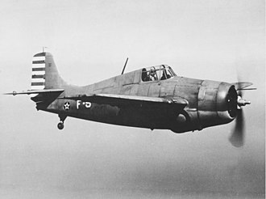

そのとき、椰子林の上空を海岸線に沿ってすれすれに、敵連合軍 グラマン戦闘機 の爆音が迫る。
「戦闘配置に付けッ」の隊長命令と同時にハルマへラ島・海軍特別陸戦隊第四中隊防空隊陣地の海岸線を、超低空飛行の姿勢で来襲して来た敵機を「ニ十五ミリ単装高射機関砲」の射手と分隊指揮の私は、敵機グラマン戦闘機が、射程内に入ったところを、狙いをさだめて「撃つぞーー」の叫び声と共に”ダンダンダン・ダンダンダン”と鉄甲弾・曳光弾・焼夷弾を一斉に、撃ち浴びせた。 何時もは、編隊を組んで来襲するのに、今日は何故か唯の一機だけだ。
趣低空飛行のために目標が摑(つか)めなかつたのか、他の高射機関砲陣地からの攻撃の砲声はまったく無かった。
「敵機は飛去った」
我軍の陣地を偵察するだけの時は、射程外のはるか上空を飛行するのに、今日は何故か超低空飛行で、一機だけだ。
「変だ」ーー「何か変だ」
と思っていた瞬間、私の陣地へ隊長伝令が飛込ん来た。
「撃ち方止め」の命令であった。
先程の 敵機グラマン戦闘機が再び飛来して、今度は我軍陣地のはるか上空を旋回飛行しながら急降下して大量の「ビラ」を投下した「ビラ」には、「日本降伏」と大きな日本文字で印刷されていた。
タツタの今まで“地対空”の死闘のたたかいのさなかであったのに、今突然と「日本降伏」のビラを、ひと目見て一瞬私は敵機グラマン機の編隊と、又死闘の激戦を 交える瞬間と同じような緊張感を持ったのです。
そして防空隊全員集合の伝令により、あらためて防空隊隊長から「日本降伏」の報と 終戦 を始めてしらされたのである。
もし其の時 私が射撃した弾丸がグラマン戦闘機に命中していたとしたら???
私の運命はどうなっただらうか???
これまでの、”地対空”の戦闘で 一機撃墜 一機撃破した戦果のある私に対して、しきりと隊内中で話題となったものである。
この様な状況であったので、今になってみると私の知った終戦日は、十五日か十六日か、さだかではない気もします。
勿論のこと、玉音放送、は聴きません。
この戦闘以来、私の耳は少々ツンボ、になってしまいました。
グラマン戦闘機

グラマン社が開発した空母に搭載される艦上戦闘機戦闘機。
第二次世界大戦の後半に活躍した F4F ワイルドキャット（Grumman F4F Wildcat）は、 当初から強固な構造の機体に自動防漏機能を備えた燃料タンクを搭載するなど防御力を重視した設計で、 その強度や性能から「グラマン鉄工所（Grumman IronWorks）」という異名を持つほどでした。 愛称の「ワイルドキャット(Wildcat)」は山猫・野良猫の意味であるが、乱暴者という意味もある。
運動性能を重視した日本軍機に比べ格闘性能は劣っていたが、設計段階から強度を重視した機体であるため急降下性能は零戦よりも優れていた。
引用: フリー百科事典 Wikipedia